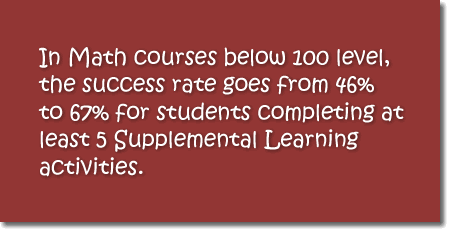
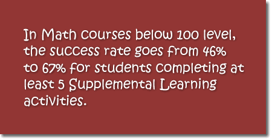
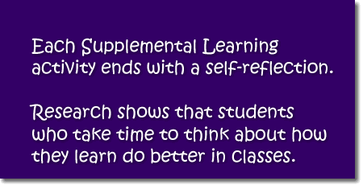
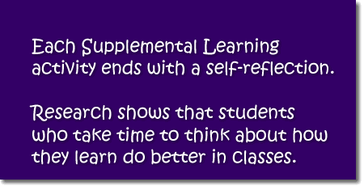

Many of the courses you take in college require you to breakdown a reading into its components. As you read, let's say, an article or an essay, you are expected to figure out the main point, the minor points, and the supporting details of the arguments presented in it. This skill will make you a better reader, helping you understand how arguments are made in writing. It will also assist you in your writing assignments, as the same skill you need for analyzing a reading will come handy when you are asked to put together an argument in an essay.
|
Student Learning Outcomes
By the end of this activity, you should be able to:
Begin the ActivityOnce you have all the needed materials, you may procede to the activity by clicking on the button below. If at any time you need help, please ask a tutor. Click here to begin. |
Did you know?
 
  
 |